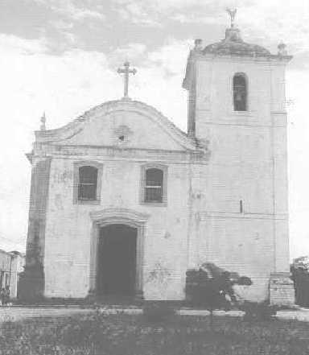
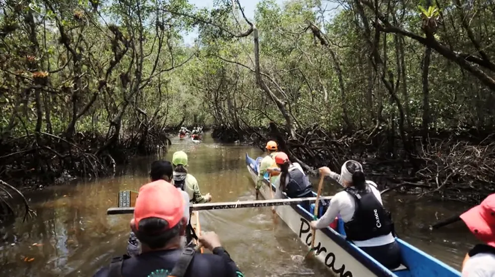
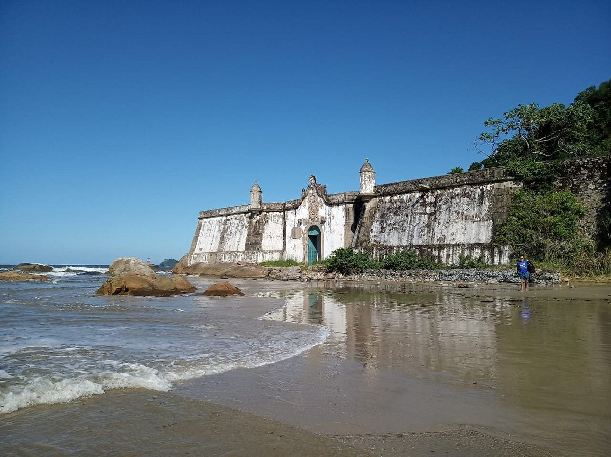
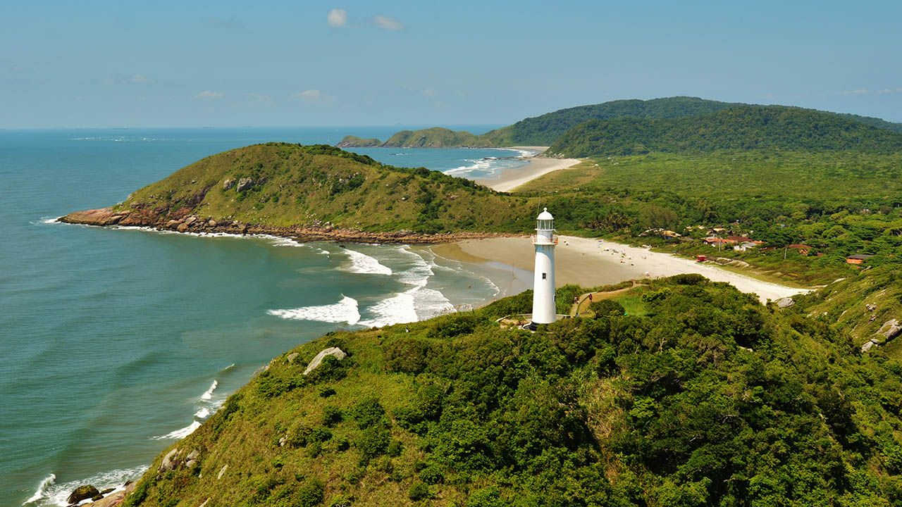

Há também relatos de que a Fontinha possuía um sistema de galerias subterrâneas que se estendia por partes da cidade. Acredita-se que essas passagens eram usadas como esconderijo pelos jesuítas durante o período da Lei Pombalina, que proibiu a atuação da Companhia de Jesus no Brasil. Essas histórias adicionam um tom misterioso ao local e despertam a curiosidade de pesquisadores e visitantes.
Ao longo dos anos, a Fontinha passou por diversas reformas para preservar sua estrutura original. Ela foi tombada pelo Patrimônio Histórico e Artístico do
Paraná em 1964, reconhecendo seu valor histórico, cultural e arquitetônico. Atualmente, a Fontinha é um ponto turístico importante de Paranaguá, atraindo visitantes que buscam explorar o rico patrimônio histórico da cidade.
IGREJA DE SÃO BENEDITO

A Igreja de São Benedito é um dos patrimônios históricos e culturais mais emblemáticos de Paranaguá. Sua história remonta ao século XVII e está intimamente ligada à Irmandade de São Benedito, uma associação religiosa composta por pessoas escravizadas e libertas, que buscavam um espaço de devoção e afirmação cultural em meio ao período colonial.
História da Construção
A construção da igreja teve início em 1784, no terreno onde antes estava localizada a Igreja de Nossa Senhora das Mercês, transferida da Ilha da Cotinga para o continente. Para a edificação, materiais da igreja anterior foram reaproveitados, evidenciando a economia de recursos da época.
Concluída no estilo colonial brasileiro, a arquitetura reflete as características simples e funcionais predominantes no período, mas com elementos marcantes, como o frontão curvilíneo e uma torre sineira lateral.
O interior da igreja também preserva um acervo sacro valioso, incluindo imagens religiosas de grande importância histórica. Uma das peças mais notáveis é a imagem de São Benedito, um santo negro venerado por comunidades afrodescendentes, especialmente durante o período da escravidão. Esses artefatos sagrados representam a religiosidade e a resistência cultural dessa população.
Papel Cultural e Religioso
São Benedito, conhecido como o "Santo Negro", tornou-se um símbolo de fé e esperança para escravizados e libertos. Sua devoção inspirou festas religiosas populares, como as Congadas, que são celebrações religiosas e culturais repletas de danças, cantos e procissões. Essas festividades simbolizam a mistura de influências católicas e africanas, reforçando a identidade e a memória cultural da comunidade afrodescendente de Paranaguá.
Além disso, a Igreja de São Benedito servia como um espaço de acolhimento e união para os membros da Irmandade. Era um local onde essas pessoas podiam se reunir, celebrar sua fé e expressar sua cultura, mesmo diante das adversidades impostas pela escravidão e pelo racismo da época.
Reconhecimento como Patrimônio
Ao longo dos séculos, a igreja passou por diversas reformas para preservar sua estrutura e acervo. Em 1962, foi tombada como patrimônio pelo Instituto do Patrimônio Histórico e Artístico do Paraná, e em 1967 foi incluída na lista de patrimônios históricos nacionais pelo IPHAN (Instituto do Patrimônio Histórico e Artístico Nacional). Esses tombamentos garantiram sua preservação como um símbolo da história e da fé em Paranaguá.
Visitação e Importância Atual
Atualmente, a Igreja de São Benedito é um ponto de interesse tanto para fiéis quanto para historiadores e turistas. Seu papel vai além da religiosidade, sendo também um espaço para o estudo das relações sociais e culturais do período colonial e um símbolo da contribuição africana para a identidade brasileira.
PORTO
O Porto de Paranaguá é um dos mais antigos e importantes do Brasil, com uma história que remonta ao período colonial e que reflete a evolução econômica e social do Paraná e do país. Localizado na Baía de Paranaguá, o porto desempenhou um papel crucial no desenvolvimento da região e na integração do Brasil ao comércio internacional.
Origens e Primeiros Anos
A história do porto começa no século XVI, quando os primeiros exploradores portugueses chegaram à região. Inicialmente, o porto era conhecido como "Porto de Nossa Senhora do Rosário", em referência à igreja próxima, e servia como ponto de apoio para as atividades
comerciais do povoado. Durante os séculos seguintes, ele foi se expandindo e modernizando para atender às crescentes demandas do comércio marítimo.
No século XIX, o porto começou a ganhar destaque como um ponto estratégico para o transporte de mercadorias, especialmente produtos agrícolas e minerais. A construção de infraestrutura mais robusta, como cais e armazéns, foi essencial para consolidar sua posição como um dos principais portos do Brasil.
Modernização e Expansão
Em 1935, o porto foi oficialmente inaugurado como Porto Dom Pedro II, marcando o início de sua operação como um complexo portuário moderno. Desde então, ele passou por diversas expansões e melhorias, tornando-se um dos maiores portos graneleiros da América Latina. Hoje, o Porto de Paranaguá é um dos principais exportadores de produtos agrícolas do Brasil, como soja e farelo de soja.

A modernização do porto incluiu a construção de terminais especializados, como o Terminal de Contêineres de Paranaguá (TCP), que é um dos mais avançados do país. Além disso, o porto investiu em tecnologias de sustentabilidade e eficiência, garantindo sua competitividade no mercado global.
Importância Econômica e Social
O Porto de Paranaguá é um elo vital para o comércio internacional do Brasil, conectando o país a mercados globais. Ele é administrado pela Portos do Paraná, que também gerencia o Porto de Antonina. Além de sua relevância econômica, o porto é conhecido por sua eficiência e sustentabilidade, sendo frequentemente reconhecido como um dos mais bem geridos do país.
Além de sua função econômica, o porto desempenha um papel importante na vida social e cultural de Paranaguá. Ele é um símbolo de progresso e inovação, mas também guarda memórias e histórias que refletem a identidade da região.
-Curiosidades e Patrimônio:
Ao longo de sua história, o Porto de Paranaguá acumulou uma rica herança cultural e histórica. Ele é um testemunho da evolução do comércio marítimo no Brasil e continua a ser um símbolo de progresso e inovação. O porto também é cercado por lendas e histórias que enriquecem sua importância cultural.
MERCADO DO CAFÉ
O Mercado Municipal foi construído em meados do século XIX e foi reformado no início do século XX. Tem um estilo neoclássico. O Mercado foi um ponto de degustação do café, servido com quitutes da região. Atualmente, é denominado Mercado do Café e abriga um centro gastronômico que oferece refeições à base de frutos de mar e comida típica do litoral, além dos tradicionais bolinhos de camarão, de banana e pastéis de vários sabores. Iniciou-se a construção no governo de Afonso Camargo e concluído no governo Caetano Munhoz da Rocha. Um misto de art-nouveau com classicismo, todo em ferro fundido trabalhado em arco e rendilhados. Contemporâneo do Mercado do Artesanato (antigo mercado de peixes), abriga hoje um centro gastronômico de frutos do mar e comida típica do litoral. Acredita-se que tenha sido edificado no largo onde outrora fora o logradouro em que estava instalado o pelourinho, símbolo do poder Real na cidade desde a sua fundação em 29 de julho de 1648. O Mercado Municipal do Café é um dos pontos gastronômicos tradicionais da cidade de Paranaguá, com restaurantes que servem refeições a base de frutos do mar e comida típica, e lanchonetes que oferecem pastéis e banana recheada fritos na hora, além de outros salgados e porções.
PASTELARIA KUBO
A Pastelaria Kubo em Paranaguá tem uma história de longa tradição, sendo um ponto de encontro e um legado de sabores e experiências para a comunidade. A família Kubo, tradicional no Mercado do Café, viu no pastelaria um potencial negócio e, desde então, a pastelaria se tornou um ícone da cidade, especialmente pelo pastel que se tornou uma paixão dos parnanguaras.
MERCADO DO PEIXE
O Mercado Municipal “Brasílio Abud”, onde abriga o comércio de pescado, foi inaugurado em 1982 durante a gestão do prefeito José Vicente Elias. Sua construção foi uma importante iniciativa para facilitar o trabalho dos pescadores locais e proporcionar um espaço adequado para a comercialização dos frutos do mar em Paranaguá. Na época em que foi inaugurado, o Mercado do Peixe refletia a importância que o setor pesqueiro tinha e ainda tem para a economia e cultura de Paranaguá.
A cidade, historicamente, possui uma forte ligação com o mar e a pesca, sendo um importante centro pesqueiro e portuário no estado do Paraná. Com o tempo, o Mercado Municipal “Brasílio Abud” não apenas cumpriu seu propósito original, mas também se transformou em um ponto turístico de destaque na cidade. Não são apenas os parnanguaras que procuram o mercado para comprar frutos do mar. Grande parte vem de cidades próximas como Antonina e Morretes, como também de Curitiba. Isso porque a fama da qualidade dos pescados já ultrapassou fronteiras, fortalecendo a cidade de Paranaguá como terra de mar com peixes de qualidade e em abundância o ano inteiro.
SANTUARIO NOSSA SENHORA DO ROCIO
O Santuário Estadual de Nossa Senhora do Rocio, localizado em Paranaguá, Paraná, tem uma história rica e profundamente enraizada na fé e devoção dos fiéis. A tradição remonta ao século XVII, quando a imagem da Virgem do Rocio foi encontrada por um pescador chamado Pai Berê, nas águas da Baía de Paranaguá. Desde então, a devoção cresceu e levou à construção de capelas e igrejas dedicadas à santa. A primeira referência documentada à Nossa Senhora do Rocio data de 1686, quando a população recorreu à santa durante uma epidemia de cólera, conhecida como "Peste Grande", que assolou o litoral. Em 1813, foi construída a Capela de Nossa Senhora do Rocio, e em 1977, o Vaticano declarou oficialmente Nossa Senhora do Rocio como padroeira do Paraná. O atual santuário foi inaugurado em 30 de maio de 1920, com um estilo arquitetônico Neobarroco, projetado pelo renomado arquiteto e pintor Alfredo Andersen. A igreja passou por diversas reformas ao longo dos anos, incluindo uma modernização em 2020, quando o presbitério recebeu uma nova pintura com desenhos sacros e litúrgicos.
A localização do santuário também é significativa, pois está voltado para a Baía de Paranaguá, onde a imagem foi encontrada. Isso reflete sua importância como um local de acolhimento para fiéis e visitantes, incluindo estrangeiros que chegavam ao porto da cidade.
ILHA DA COTINGA

Local onde os primeiros colonizadores vindos de São Paulo, com a intenção de chegar a Paranaguá, se estabeleceram com receio dos índios carijós que dominavam a região. Situada na baía de Paranaguá, é hoje fonte de mistério, onde acham-se inscrições em ruínas e vestígios do início da civilização paranaense.
Em 1677, foi construída uma capela destinada ao culto de Nossa Senhora das Mercês, demolida em 1699, para se erigir a Igreja de São Benedito no continente. Em 1955 foi pedida a reconstrução da antiga ermida, e em 17 de março do mesmo ano realizou-se uma procissão marítima de retorno da antiga imagem de Nossa Senhora das Mercês esculpida em pedra e vinda de Portugal. No ano de 1993 a Ermida foi finalmente reconstruída, sendo sua inauguração no dia 25 de abril, porém atualmente só restam ruínas da igreja. O acesso ao templo é feito através de rústica
escada de pedra, formada por aproximadamente 365 degraus, proporcionando uma bela visão da cidade e do mar. Os nativos são índios Mbyá Guarani, que até hoje habitam no cenário onde seus ancestrais nasceram, preservando os costumes e tradições do seu povo. Para maiores informações sobre os Mbyá Guarani clique aqui (direciona para as informações sobre o povo indígena em Atrativos Culturais).
O Acesso à ilha é feito somente por barcos fretados na rua da praia e demora cerca de 15 minutos. Para agendar uma visita à aldeia indígena Guarani Mbya, entrar em contato com a Terra Mar Consultoria Ambiental.
A Ilha da Cotinga, localizada na Baía de Paranaguá, é um marco histórico e cultural do Paraná. Considerada o primeiro território habitado do estado, foi o ponto inicial da colonização paranaense. Os primeiros colonizadores, vindos de São Paulo, estabeleceram-se na ilha no século XVI, buscando refúgio dos povos indígenas Carijós e Mbyá Guarani que dominavam a região2.
A ilha também possui importância religiosa. Em 1677, foi construída a Capela de Nossa Senhora das Mercês, que mais tarde foi demolida para dar lugar à Igreja de São Benedito no continente. Em 1993, a antiga ermida foi reconstruída, e hoje restam ruínas que testemunham a história da região2.
Atualmente, a Ilha da Cotinga é habitada por indígenas Mbyá Guarani, que preservam suas tradições e cultura. O acesso à ilha é feito apenas por barco, e ela é um destino que combina história, natureza e cultura.
ILHA EUFRASINA

A Ilha Eufrasina, situada na baía de Paranaguá, no Paraná, é uma área de grande beleza natural e importância ecológica. Conhecida por suas paisagens deslumbrantes, a ilha é cercada por águas calmas e possui praias que atraem visitantes em busca de tranquilidade e atividades ao ar livre, como caminhadas, banhos de mar e esportes aquáticos. A vegetação nativa da Mata Atlântica que cobre a ilha abriga uma rica biodiversidade, incluindo diversas espécies de aves e fauna local, tornando-a um destino popular para a observação de vida selvagem.
A Ilha Eufrasina também é habitada por comunidades tradicionais que mantêm um modo de vida baseado na pesca e na agricultura, preservando suas práticas culturais e costumes ao longo do tempo. Essas comunidades enfrentam desafios relacionados à conservação ambiental e ao desenvolvimento sustentável, buscando equilibrar a exploração dos recursos naturais com a preservação do ecossistema local.
Além de seu valor natural, a ilha é um importante patrimônio cultural, refletindo a interdependência entre os moradores e o meio ambiente. A Ilha Eufrasina, portanto, representa um espaço significativo para o ecoturismo e a conservação, destacando a necessidade de proteger seus recursos naturais enquanto se promove o desenvolvimento sustentável para as comunidades que ali vivem.
ILHA PIAÇAGUERA

A Ilha Piaçaguera, situada na baía de Paranaguá, no estado do Paraná, é uma área de grande importância ecológica e cultural. Com uma rica biodiversidade, a ilha é coberta por vegetação nativa da Mata Atlântica, abrigando diversas espécies de fauna e flora, o que a torna um local ideal para a observação de aves e outras formas de vida silvestre. A comunidade que habita a Ilha Piaçaguera é composta principalmente por caiçaras, que mantêm um modo de vida tradicional baseado na pesca e na agricultura, preservando suas práticas culturais e costumes ao longo dos anos.
A ilha é acessível por barco e oferece paisagens naturais deslumbrantes, com praias de águas calmas que atraem visitantes em busca de ecoturismo e atividades ao ar livre, como caminhadas e passeios de barco. Além disso, a Ilha Piaçaguera é um importante ponto de referência para a preservação ambiental, com iniciativas voltadas para a conservação dos recursos naturais e a promoção de práticas sustentáveis entre os moradores.
Entretanto, a ilha enfrenta desafios relacionados à conservação do meio ambiente e ao desenvolvimento sustentável, uma vez que a pressão do turismo e a exploração de recursos naturais podem impactar seu ecossistema frágil. A Ilha Piaçaguera, portanto, representa um patrimônio natural e cultural significativo, refletindo a interdependência entre a comunidade local e o meio ambiente, e a necessidade de equilibrar a preservação com o desenvolvimento econômico.
PONTA DO UBÁ
A Ponta do Ubá é uma comunidade caiçara localizada no Complexo Estuarino de Paranaguá, no Paraná, que se destaca por sua rica cultura e modos de vida sustentáveis. Com cerca de 100 moradores, a comunidade preserva tradições que remontam à relação íntima com o mar e a natureza, baseando sua subsistência na pesca artesanal e na agricultura familiar. A Ponta do Ubá é cercada pela exuberante Mata Atlântica, oferecendo um ambiente natural diversificado, que abriga uma variedade de espécies de fauna e flora, além de ser um importante habitat para aves e outros animais silvestres.
A região é conhecida por suas belas paisagens, incluindo praias de águas calmas e trilhas que permitem o contato direto com a natureza, atraindo visitantes em busca de ecoturismo e atividades recreativas. A cultura local é rica em folclore, música e culinária, refletindo a herança caiçara e a conexão dos moradores com o ambiente marinho.
Entretanto, a Ponta do Ubá enfrenta desafios relacionados à conservação ambiental e ao desenvolvimento sustentável, uma vez que a pressão do turismo e a exploração de recursos naturais podem impactar seu ecossistema frágil. A comunidade busca equilibrar a preservação de seus modos de vida tradicionais com a necessidade de promover práticas sustentáveis que garantam a proteção do meio ambiente. Assim, a Ponta do Ubá representa um importante patrimônio cultural e natural, destacando a interdependência entre os habitantes e o ecossistema local.
ILHA SÃO MIGUEL
A Comunidade Marítima de São Miguel está localizada na Baía de Paranaguá e é também conhecida como “Saco da Tambarutaca”, fazendo referência à ocorrência comum a tempos atrás deste crustáceo.
Muito conhecida por sua hospitalidade singular, São Miguel é uma comunidade que guarda tradições Caiçaras como a Folia do Divino, a casa de farinha, as canoas de um tronco só. Isso além de conter uma belíssima Mata Atlântica. Vivem essencialmente da pesca do siri, sua fonte de renda e alimentação.
ILHA DO MEL
A ilha do Mel é um ponto turístico de muita importância no estado do Paraná. Muitas pessoas consideram que a ilha tem as melhores praias do estado. A ilha, que faz parte do município de Paranaguá, é administrada pelo Instituto Ambiental do Paraná (IAP). Não é permitida a tração animal ou a motor na ilha. Existem muitas áreas onde não é permitida a presença de visitantes. A ilha possui quatro pontos turísticos de destaque: Ao norte a Fortaleza, no centro Nova Brasília e o Farol das Conchas e ao Sul Encantadas.
MORROS DE PARANGUÁ
Os morros de Paranaguá, no litoral do Paraná, oferecem diversas opções para contemplar a natureza e as paisagens, com destaque para o Morro da Baleia, o Morro das Conchas e o Morro do Sabão. O Morro da Baleia abriga a Fortaleza de Nossa Senhora dos Prazeres, com um mirante que oferece vista panorâmica, e o Morro das Conchas, na Ilha do Mel, tem um farol que oferece belas vistas da região. O Morro do Sabão, com sua natureza preservada, oferece uma vista privilegiada da Baía de Paranaguá e do Farol das Conchas.


MORRO DA BALEIA
(Fortaleza de Nossa Senhora dos Prazeres de Paranaguá)
A Fortaleza de Nossa Senhora dos Prazeres de Paranaguá, também referida como Fortaleza da Barra ou Fortaleza de Paranaguá, localiza-se na praia da Fortaleza, no sopé do morro da Baleia (hoje da Fortaleza), na Ilha do Mel, litoral do estado do Paraná, no Brasil. Dominando a barra do canal grande de acesso à baía de Paranaguá, esta fortificação destinava-se à defesa estratégica da antiga vila de Paranaguá, garantindo a segurança do seu ancoradouro, quinze milhas adiante, onde era embarcado o ouro, a madeira e, mais tarde, a erva-mate extraídos da região, contra os corsários e espanhóis que frequentavam aquele trecho do litoral.

MORRO DAS CONCHAS
(farol das conchas)
Foi construído por ordem do Imperador D. Pedro II com o objetivo de melhorar a orientação dos navegantes na Baía de Paranaguá e modernizar a navegação comercial brasileira. Ele está localizado no alto do Morro das Conchas que tem aproximadamente 60 metros de altura e proporciona uma vista privilegiada. É possível avistar o monumento de praticamente toda a ilha . O farol exerceu atividades de controle de navegação até os anos 1950, após a Segunda Guerra Mundial. Atualmente não é possível visitar a sua área interna por segurança e para que seja preservada a construção. O acesso pode ser caminhando cerca de 10 minutos após desembarcar no trapiche de Nova Brasília ou por uma trilha saindo de Encantadas, que dura cerca de 2 horas. A caminhada é considerada de leve a moderada. Os 150 degraus que separam a base do morro e o farol conduzem a uma das vistas mais privilegiadas da Ilha do Mel.

CACHOEIRAS:
CACHOEIRA QUENTILHA
Para quem quer aproveitar um dia ainda mais diferente, a dica é visitar Paranaguá e conhecer as cachoeiras do rio Brejatuba. Também na PR-508, mas no km 4, a entrada para as cachoeiras Quintilha e Alto da Quintilha, que estão dentro do Parque Nacional Saint Hillaire, tem fácil acesso. A Cachoeira da Quintilha tem uma queda d’água de cerca de 40 metros e é exuberante. O espaço cobra valor de entrada, mas simbólico.